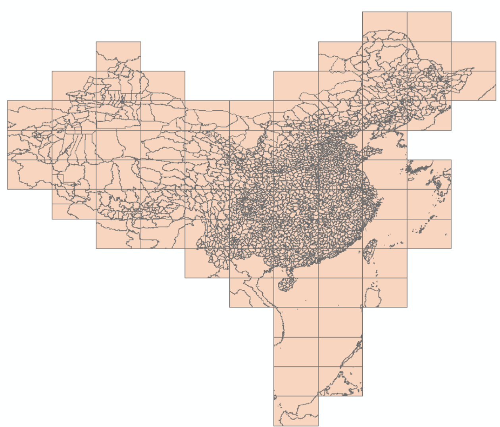
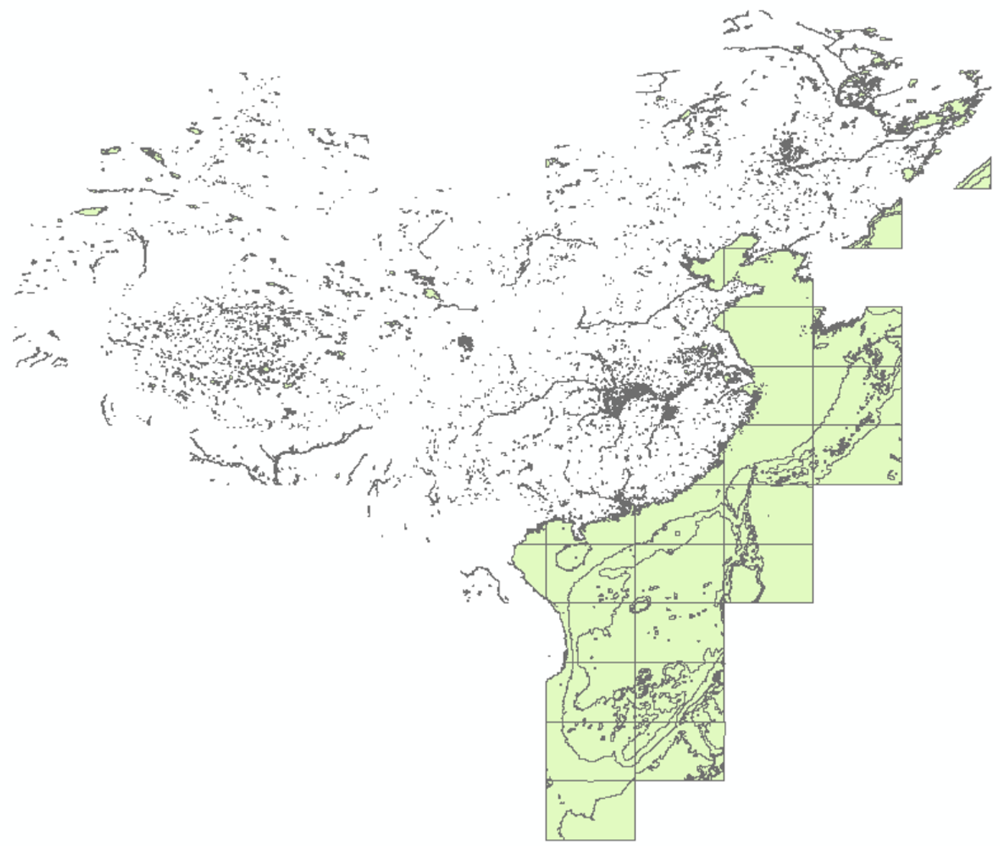

本文介绍国家标准地理数据的获取以及处理为 GMT 支持格式的方法。
具体包括：
- 国家标准1:100万（非涉密）基础地理数据的申请、下载
- 数据集内容简介
- 数据集要素合并、提取
- 借助OGR工具将SHP转为GMT可用格式
本文仅供个人科研作图参考。若使用者编制的地图需向社会公开的，请务必遵守 《地图管理条例》有关规定依法履行地图审核程序。
数据概况
国家基础地理信息中心于2017年11月份开始免费向公众提供全国1:100万非涉密的 全国基础地理数据库。目前数据整体现势性为2017年。该数据库：
- 共77幅DLG数据集，包括全国陆地范围以及台湾岛、海南岛、钓鱼岛、南海诸岛在内的主要岛屿及其临近海域。
- 包括水系、居民地及设施、公路铁路、行政边界、地名等5个数据集12个数据层，如下图所示。
全国基础地理数据库数据集
数据更多介绍可访问全国地理信息资源目录服务系统。
数据获取
- 进入全国地理信息资源目录服务系统，点右上角“注册”。已注册用户直接登陆。
- 在“数据下载”栏目中，点击进入“1：100万全国基础地理信息数据库”。
- 该数据集下有77个图幅产品，当前最新生产时间是2017年。可选择一两个图幅，或全部选中，加入成果车。
- 结算，填写订单中的个人信息，验证手机号，下载数据。 注：若未提示验证手机，换个firefox浏览器试试。
数据集内容简介
该数据集包括5类12个要素层，分别为：
AANP 自然地名（点）图层：包括交通要素名、纪念地和古迹名、山名、水系名、海洋地域名、自然地域名等

AGNP 居民地（点）图层：包括各级行政地名和城乡居民地名称等

该数据集包括首都、省会、直辖市、特别行政区、地级行政区、县级行政区以及乡镇，以识别码CLASS进行区分：
行政区地名 CLASS码 省行政地名(直辖市、自治区、特别行政区) AB 自治州、盟、地区行政地名 AC 地级市行政地名 AD 县级市行政地名 AE 县级行政地名（自治县、旗、自治旗、地级市市辖区） AF 县辖区及县级行政区域的派出机构地名 AG 街道办事处地名 AH 镇行政地名 AI 乡行政地名 AJ BOUA 各级行政区（面）图层

注：该数据集包含了分幅边界，进行单个行政区（例如某省、市）边界、面积提取时需先合并图层。
BOUL 中国及邻区各级行政界限（线）图层

该数据集包括各级行政区界线，以GB码进行区分：
行政区界类型 GB码 海岸线 250200 水系交汇处 260100 外国地区国界线 610200 国界线(已定) 620201 国界线(未定) 620202 省级界线 630200 特别行政区界 630400 地、市、州级行政区界 640200 县级行政区界（已定） 650201 特殊地区界限 670202 BOUP 领海基点(点)图层
HYDA 水系（面）图层，包括湖泊、水库、双线河流等

水系数据集以GB码区分：
水系要素类型 GB码 地面河流 210101 时令河 210200 干涸河 210300 湖泊 230101 池塘 230102 时令湖 230200 干涸湖 230300 建成水库 240101 建设中水库 240102 HYDL 水系（线）图层，包括单线河流、沟渠、河流结构线等

HYDP 水系（点）图层，包括泉、井等
LRDL 公路（线）图层，包括国道、省道、县道、乡道、其它公路、街道、乡村道路等

不同行政等级公路数据以GB码进行区分，而不同技术等级以RTEG码区分。
LRRL 铁路（线）图层
RESA.shp 居民地（面）图层
RESP 居民地（点）图层，包括普通房屋、蒙古包、放牧点等
以上只列出了部分要素的分类编码，更多可参考基础地理信息要素分类与代码（GB/T 13923-2006）。
数据处理
从网站上直接下载的数据是分图幅的 geodatabase(gdb) 数据库文件，如果需要用 GMT 画“全国一张图”，需要：
- 合并77个gdb文件中的同类要素
- 提取某类要素中的某个等级数据
- 转为gmt识别的文本格式
gdb数据库文件合并
可以使用FME软件、ArcGIS软件或直接编写Python批处理脚本进行gdb数据的批量合并。 前两款软件比较大，若只需要对数据进行简单处理，可以利用Python的ArcPy包进行批处理：
# -*- coding: utf-8 -*-
import os
import arcpy
# 77个gdb数据库合并
def MergeFileGDB(inPath, outPath, outName):
arcpy.env.workspace = inPath
mergeFilePath = outPath + os.sep + outName
print(mergeFilePath)
workspaces = arcpy.ListWorkspaces("*", "FileGDB")
for workspace in workspaces:
print(workspace)
arcpy.env.workspace = workspace
mergeFileExist = os.path.exists(mergeFilePath)
if mergeFileExist:
featureclasses = arcpy.ListFeatureClasses()
for fc in featureclasses:
arcpy.Append_management(fc, os.path.join(outPath + os.sep + outName, os.path.splitext(fc)[0]), "TEST", "", "")
else:
arcpy.CreateFileGDB_management(outPath, outName)
featureclasses = arcpy.ListFeatureClasses()
for fc in featureclasses:
arcpy.FeatureClassToFeatureClass_conversion(fc, outPath + os.sep + outName, os.path.splitext(fc)[0])
# 提取gdb数据库的所有shp图层
def gdb2shp(out_location, out_name):
arcpy.env.workspace = out_location + os.sep + out_name
print(arcpy.env.workspace)
featureclasses = arcpy.ListFeatureClasses()
for fc in featureclasses:
arcpy.CopyFeatures_management(fc, out_location + os.sep + str(fc))
print(fc)
in_file = r"F:\from"
out_location = r"F:\results"
out_name = "merge.gdb"
MergeFileGDB(in_file, out_location, out_name)
gdb2shp(out_location, out_name)
其中，infile是77个gdb文件夹的目录，out_location是合并目录，out_name是合并
为一个gdb数据库文件的名称。ArcPy可以随ArcGIS而安装，也可以单独安装。该代码将分幅的
交通、水系、边界等12类要素分别合并为全国一张图，最后转为12个shp文件。
提取某类要素
由于每个数据集（一个shp文件）中存在不同等级的要素，而在实际使用中可能需要提取 某省的居民地点数据，或仅国界、省界。所以需利用arcpy编程进一步提取。
例如：
已知行政区划BOUL图层中GB代码620201、620202、250200分别为已定国界、
未定国界和海岸线，编写Python脚本，从BOUL图层中提取国界及海岸线要素：
import arcpy
infile = r"F:\results "
arcpy.env.workspace = infile
qry = '"GB" = 620201 or "GB" = 620202 or "GB" = 250200'
try:
arcpy.MakeFeatureLayer_management("BOUL.shp", "BOUL_1")
arcpy.SelectLayerByAttribute_management("BOUL_1", "NEW_SELECTION", qry)
arcpy.CopyFeatures_management("BOUL_1", "BOUL_1.shp")
except:
print("An error occured during selection")
其中，infile表示行政区划图层BOUL.shp所在的文件夹。代码运行后，从该图层中
提取GB代码为620201、620202、250200的要素，保存到当前目录的BOUL_1.shp中.
格式转换
利用OGR库将shp文件转化为gmt可用的文本文件，具体可参考博文GDAL/OGR: 地理空间数据格式转换神器:
ogr2ogr -f GMT BOUL_1.gmt BOUL_1.shp
最后GMT绘图如下：
gmt psxy BOUL_1.gmt -R70/145/3/55 -JM105/35/6.5i > ChinaMap.ps
绘图结果如下：